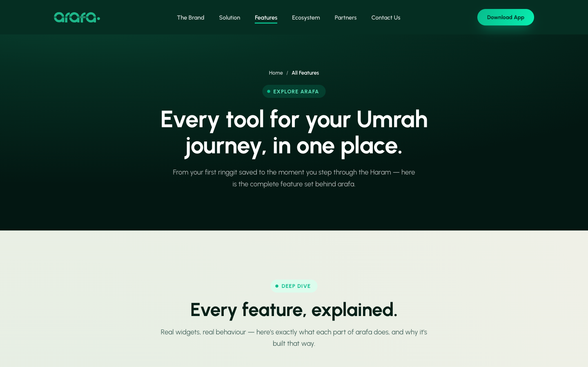

A savings and booking platform built around one idea: Umrah should be planned for on purpose, with a clear savings target, transparent Shariah-compliant packages, and no guesswork about where the money goes.
Most people save for Umrah the same way they save for anything else, a little at a time, without a fixed target or a clear view of package pricing until they're already deep into planning. Arafa turns that into a structured fund: a savings goal, eKYC-verified identity, and packages priced and compared up front.

Home, features, and contact were designed as one connected flow, so someone landing on the hero and someone reading the full feature breakdown arrive at the same trust conclusion. The result is a marketing site that reads less like an app pitch and more like a fund someone would actually commit money to.